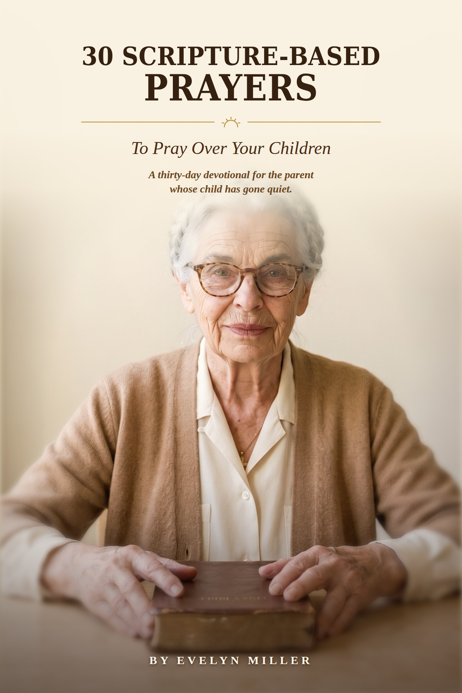

WEEK ONE
Declaring
You say it out loud before you feel it. Every day has the declaration written out in full, word for word, so you never sit there hunting for the right words on a hard morning.
You're in a social media browser. Checkout works better in your normal one.
Forty-one years in this house. I pray at the front window every evening, and I have never once prayed into an empty room.
See the two challenges Or start with the free devotional →There is a prayer you have been saying for somebody, and you have been saying it a long while now.
I spent thirty years as a nurse, most of them on nights. The quiet hours are when people finally say what they have been carrying, and I heard a great deal of it. Some of them went home. Some of them did not. He was in the room just the same.
The house on Maple is quiet now, and my son does not always call. I pray at the front window every evening and I hand him back.
I do not know how any of it ends. I have stopped needing to.
— Evelyn
Forty-one years in this house, and the same book on the same table.
There is a kind of quiet that settles on a house when a child stops calling. It is not anger. It is nothing you could point to. It is just that the phone does not ring the way it used to, and you have stopped expecting it to.
You do not need their permission to pray for them, and you do not have to tell them you did.
There are things you can say about your own child on your knees that you could never say to their face. The worry you would not burden them with. The thing you have noticed and said nothing about.
It has to go somewhere. For forty-one years mine has gone out the front window.
I was the one everybody leaned on for fifty years. Nobody asked me what it took, and I never said. You learn not to say it.
If you are the one who always shows up, you are probably reading this at an hour when the house is quiet.
Thirty years of nights on the ward taught me that. In the daylight everyone is fine. At three in the morning they tell you what they have actually been carrying, and it is almost never the thing on the chart.
Whatever you have been carrying, this is the hour you would say it. He is already in the room.
I have prayed over people who went home and people who did not. I could not tell you why one and not the other, and I have stopped asking for the arithmetic.
Praying is not predicting. You are handing it over, not working it out.
Some people have not prayed in years and feel they would have to explain where they have been. You would not. He has not been waiting for an account of it.
Start with one sentence tonight. It does not have to be a good one.
I will both lay me down in peace, and sleep: for thou, LORD, only makest me dwell in safety.PSALM 4:8
Thirty mornings in God Heals, about fifteen minutes each. Stories from an actual bedside — Ruth, Walter, Frank — and a prayer written out for every one of them.
WEEK ONE
You say it out loud before you feel it. Every day has the declaration written out in full, word for word, so you never sit there hunting for the right words on a hard morning.
WEEK TWO
The harder week. What you do with the days when nothing has visibly moved and you are still saying it anyway.
WEEK THREE
Every declaration gets paired with one small, real thing to do. Faith that only speaks is half of faith. It has to move.
WEEK FOUR
Thanks, and the page at the close where you write your own testimony in your own words.
One for your faith. One for the body He gave you to look after. Both a day at a time, in large print.
Declaring · Believing · Acting · Receiving
Thirty days in all, about fifteen minutes each morning.
The body He gave you to look after · Understanding what's happening · Morning energy · Rebuilding sleep · Making it stick
Plus a closing word, a thirty-day recap, and four bonus sections.
The praying one and the body one. Sixty mornings altogether, and most people who write to me end up wanting the pair anyway.

There is a thirty-day devotional I wrote for the parent whose grown child has gone quiet. A son who does not always call. A daughter who carries more than she tells you.
It is not a sample of something else. It is the whole book, all thirty days, and it comes to your email in a minute or two.
Tell me what's been on your mind lately.
A lot of people who buy these are not the ones reading them. If that is you, here is what to know. It is a PDF, so it arrives by email in a minute or two and you can forward it or print it out and take it over.
The print is large. Every day is one page. There is nothing to log into, nothing to set up, and nothing that renews.
Pick one for herNo. It is a companion for thirty mornings, not a replacement for anything. Every verse comes straight from the King James Bible you already know.
Every prayer is written out for you, word for word. Say it exactly as it is written, or let it become your own words. Either one is real faith.
Yes. Every page is set in large, comfortable print — the kind you can read without holding it at arm's length.
No, and I would never ask you to. I was a nurse for thirty years. Keep your doctor, keep your medication, keep your appointments. This is for the part of it a pill was never going to reach.
You pick back up where you left off. It is not a streak. It is a posture.
About fifteen minutes most mornings.
It is a download. You pay once, it lands in your email, and it is yours. There is no subscription and nothing renews.
If it is not for you, write to us within a year and we will refund it. You keep the book. I would rather you told me it did not help than sat quietly with something you paid for and never opened.
Start day one